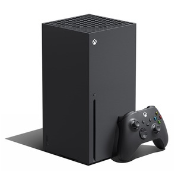

| 🎮 | 🎮 |
|  | |
|---|---|
| Характеристики:
|
Характеристики:
|
Дизайн
Внешне PlayStation 5 и Xbox Series X абсолютно разные.
Дизайн PlayStation 5 больше понравится тем, кто любит футуристический стиль и мягкие линии.
Консоль выполнена в белом цвете, покрытие полностью глянцевое — блестит и переливается под освещением.
Размер PS5 с дисководом — 390x104x260 миллиметров; без дисковода — 390x92x260 миллиметров.
Xbox Series X представлена в более классическом дизайне, и напоминает обычную чёрную коробку,
которую легко вписать в любой интерьер. Кроме того, Xbox Series Х занимает меньше места, чем PS5.
Размер Xbox Series Х — 51х151х301 миллиметров.
SSD
Как и Series X, PS5 переходит на SSD. Только если Microsoft использует накопители на двух линиях PCIe 4.0,
то Sony подводит четыре линии, получая скорость в 5,5 против 2,4 ГБ/с. Так как это единственная характеристика,
по которой PS5 превосходит Series X, то Sony на неё активно упирает и представляет это как решающую фичу консоли.
Sony Во-первых, банально поставила быстрый SSD.
Во-вторых, отказалась от сторонних контроллеров памяти и установила свой,
который рассчитан на работу именно с игровыми файлами, а также со сжатой информацией.
В-третьих, попыталась по максимуму ускорить выгрузку данных и освободить от этих дел центральный процессор.
В-четвёртых, постаралась убрать все бутылочные горлышки на пути от SSD к APU.
Сейчас лучше скажем, что, в отличие от Microsoft, Sony отказалась от проприетарного решения с внешней памятью.
За одной из декоративных панелей она спрятала M.2-слот, в который встаёт любой SSD любого объёма.
Игры
Игры — сильная сторона PlayStation 5.
Консоль обратно совместима со всеми тайтлами PS4 (в список не вошли всего восемь проектов из 4000).
А вот чем PS5 сильна,так это эксклюзивами.Если все новинки для Xbox выйдут и на ПК, то PS5 уже на старте получит четыре эксклюзива.
В библиотеке Microsoft с флагманской консолью Xbox Series X эксклюзивов намного меньше,
но платформа выигрывает своей доступностью. Игры для Xbox можно запускать на ноутбуках и стационарных компьютеров,
кроме того, все игры с Xbox One доступны на следующих поколениях консоли.
Ещё одно преимущество консоль Xbox Series X позволяет наслаждаться играми,
которые были доступны ещё в оригинальной версии Xbox в 2001 году.
У каждой платформы есть собственные сервисы подписки на игры, но оплатить их из России сейчас нельзя.
В качестве выхода из ситуации можно купить Турецкую подписку на строниих сайтах.
Также остаётся актуальным вариант покупки игр на дисках.